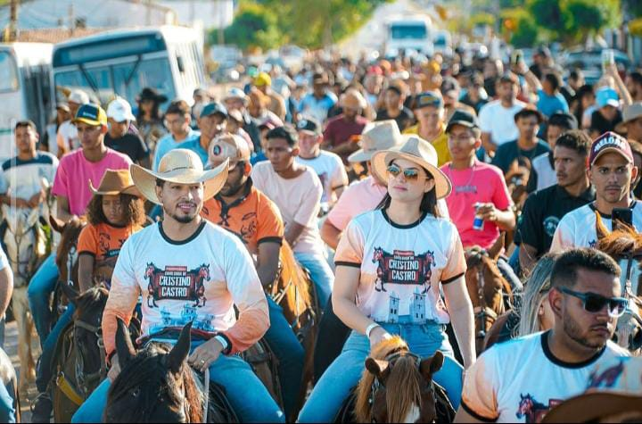
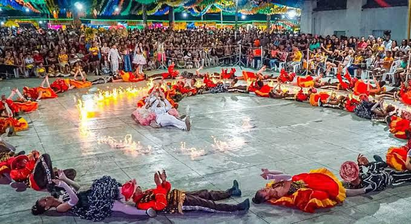

Próximos Eventos

Cavalgada
Desfile de vaqueiros a cavalo com toadas e aboios, parte dos festejos locais.

Festivais Juninos
Quadrilhas, danças folclóricas e comidas típicas — celebração da cultura nordestina.
Festejo
Festa popular com shows, forró e piseiro; celebração e lazer para comunidade e visitantes.
Paralelamente à programação religiosa, os festejos reúnem apresentações musicais locais e nacionais.